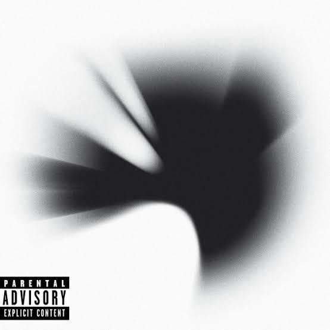
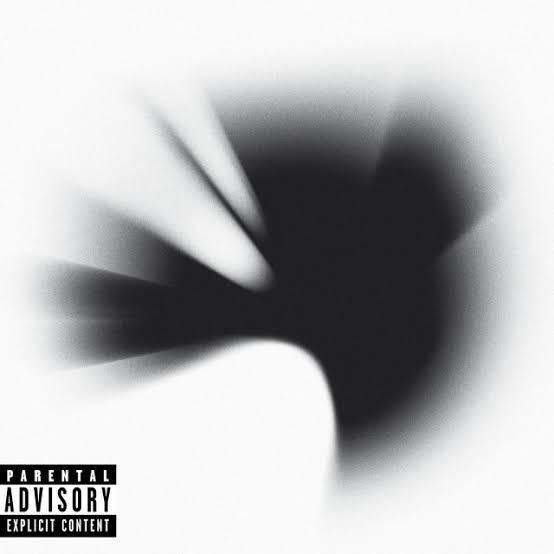

Historia

Linkin Park es una banda estadounidense que revolucionó el rock alternativo, el nu metal y el rap rock desde su formación en 1996 en Agoura Hills, California. La agrupación nació del sueño musical de tres amigos de secundaria: Mike Shinoda, Brad Delson y Rob Bourdon, quienes compartían una profunda pasión por la música y comenzaron a tocar juntos bajo el nombre de Xero.
En sus inicios, Xero grabó varios demos caseros, pero a pesar de su entusiasmo, no lograron captar la atención de grandes discográficas. Sin embargo, esto no los detuvo. Poco a poco, fueron incorporando nuevos miembros: el DJ Joe Hahn, el bajista Dave "Phoenix" Farrell, y el vocalista Mark Wakefield. Aunque Wakefield eventualmente dejó la banda, esto dio paso a una búsqueda que cambiaría su destino.
En 1999, encontraron a la pieza faltante del rompecabezas: Chester Bennington, un talentoso vocalista originario de Arizona, cuya potente voz y estilo emocional complementaban perfectamente el rap de Shinoda. La conexión entre Chester y Mike fue inmediata, generando una dinámica vocal única que se convertiría en el sello distintivo de la banda.
Con su alineación completa, decidieron cambiar su nombre a Linkin Park, como un juego de palabras con Lincoln Park, un lugar cercano a donde ensayaban. Al no poder registrar el dominio de Internet con ese nombre, modificaron ligeramente la escritura, lo que dio origen al nombre con el que conquistarían el mundo.
En el año 2000, lanzaron su álbum debut, "Hybrid Theory", el cual se convirtió en un fenómeno global casi de inmediato. Canciones como "In the End", "Crawling" y "One Step Closer" resonaron profundamente entre los jóvenes de la época, mezclando guitarras agresivas, letras emocionales y una fusión innovadora entre rap y rock. "Hybrid Theory" no solo fue un éxito de ventas —alcanzando ventas superiores a los 30 millones de copias en todo el mundo—, sino que también redefinió el sonido del nu metal y se posicionó como uno de los discos debut más importantes del siglo XXI.
Impulsados por el éxito, Linkin Park participó en giras mundiales, grandes festivales como Ozzfest y Projekt Revolution, y se consolidó como una de las bandas más influyentes de la nueva generación del rock. En 2003, lanzaron su segundo álbum de estudio, "Meteora", que no solo mantuvo su popularidad, sino que la elevó aún más. Temas como "Numb", "Faint", "Breaking the Habit" y "Somewhere I Belong" dominaron las listas musicales a nivel mundial y reafirmaron el estilo único de la banda: una mezcla explosiva de energía, melodía y profundidad lírica.
Evolución Musical
Tras el éxito arrollador de "Meteora", Linkin Park comenzó a experimentar con nuevos sonidos. En 2007 lanzaron "Minutes to Midnight", un álbum que marcó un cambio en su estilo. Se alejaron del nu metal tradicional para explorar el rock alternativo y un enfoque más maduro tanto en lo lírico como en lo musical. Canciones como "What I've Done" y "Shadow of the Day" mostraron un lado más introspectivo de la banda.
En 2010, sorprendieron nuevamente con "A Thousand Suns", un álbum conceptual con fuertes elementos electrónicos, ambientales y letras políticas y filosóficas. Aunque dividió opiniones, demostró su valentía artística. Luego vinieron "Living Things" (2012), que fusionó su etapa electrónica con un sonido más accesible, y "The Hunting Party" (2014), donde volvieron a un sonido más crudo y energético, recuperando parte de su esencia inicial.
En 2017, lanzaron "One More Light", un álbum con un enfoque más pop y emocional. Aunque recibió críticas mixtas, se destacó por su vulnerabilidad lírica y por mostrar un lado más humano de la banda. Fue también el último álbum grabado con Chester Bennington.
Pérdida de Chester Bennington

El 20 de julio de 2017, Chester Bennington fue encontrado sin vida en su residencia de California. Su fallecimiento conmocionó al mundo entero, dejando un vacío enorme entre sus compañeros de banda, amigos, familiares y millones de fanáticos. Chester había sido abierto sobre sus luchas con la salud mental, la depresión y las adicciones, y su partida abrió un importante diálogo sobre estos temas en la industria musical y más allá.
En octubre del mismo año, Linkin Park realizó un concierto homenaje titulado "Linkin Park and Friends: Celebrate Life in Honor of Chester Bennington", donde artistas como Jonathan Davis, Alanis Morissette, Oliver Sykes y muchos otros se unieron para rendir tributo a su vida, su arte y su legado.
Legado
A lo largo de su carrera, Linkin Park redefinió lo que significaba ser una banda de rock en el siglo XXI. Supieron mezclar géneros como el rock, el rap, la electrónica e incluso el pop, siempre con autenticidad y evolución constante. Su música conectó con millones por su carga emocional, letras honestas y mensajes profundos.
Chester Bennington dejó una de las voces más icónicas e intensas del rock moderno. Su presencia sobre el escenario, carisma y emoción marcaron a toda una generación. Aunque la banda se encuentra en pausa, sus miembros continúan honrando su legado con proyectos paralelos y manteniendo viva la memoria de Chester.
Linkin Park no solo fue una banda, sino un movimiento que inspiró a personas en todo el mundo. Su música sigue vigente y su legado continúa creciendo.
 
